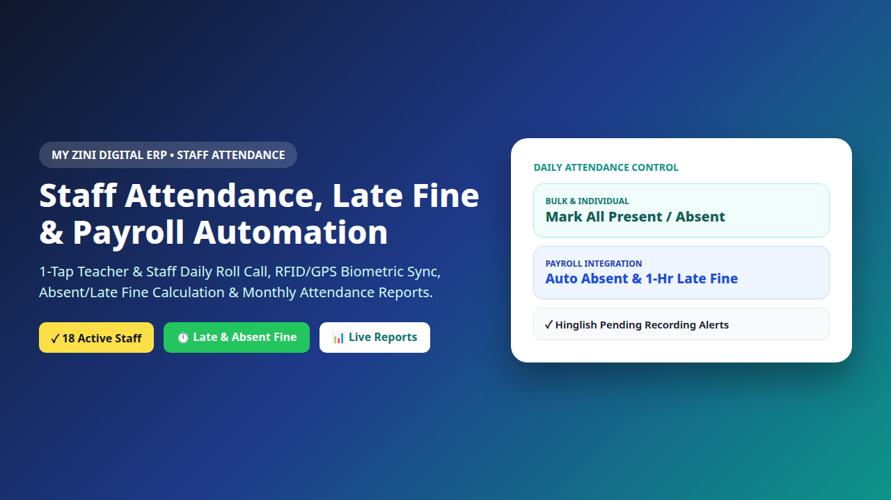
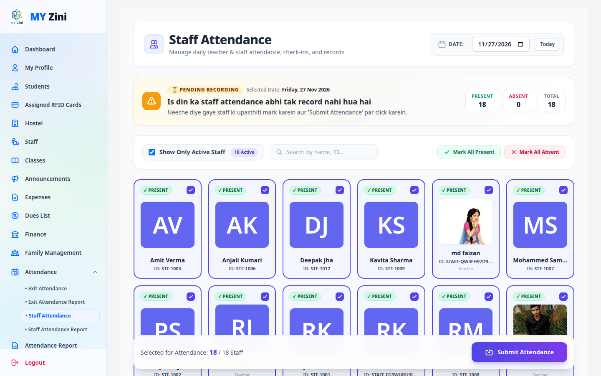
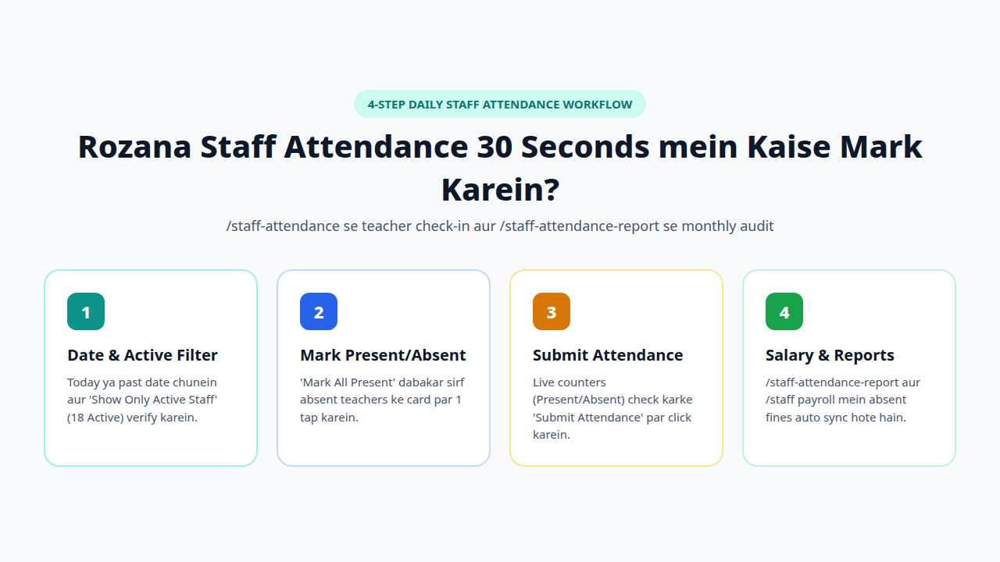
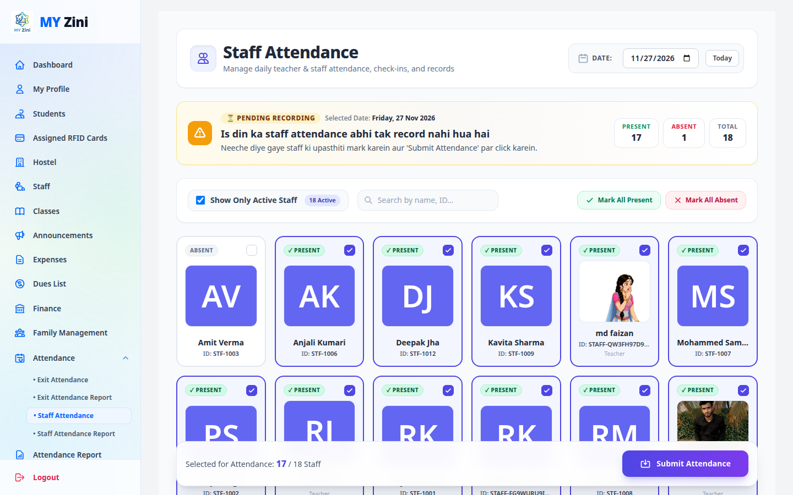
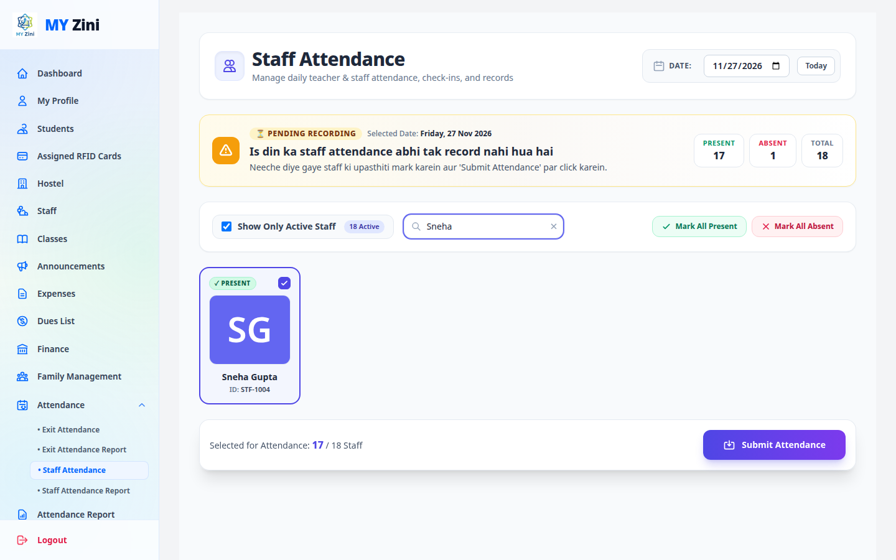
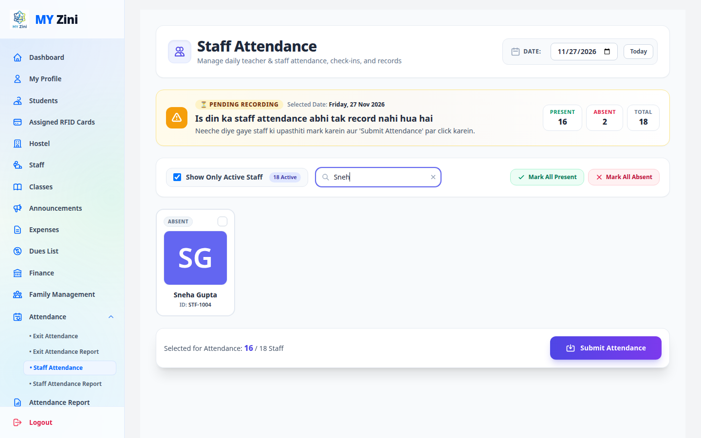
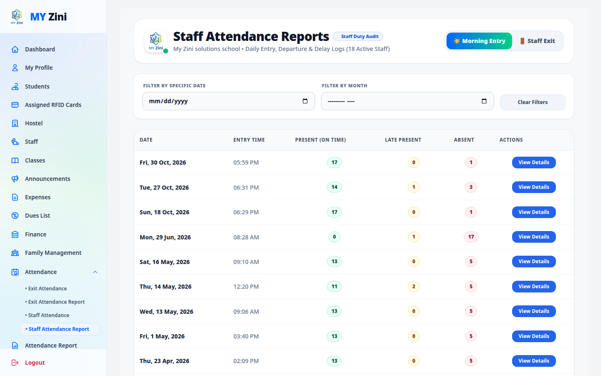
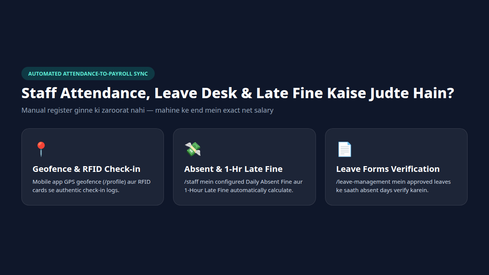
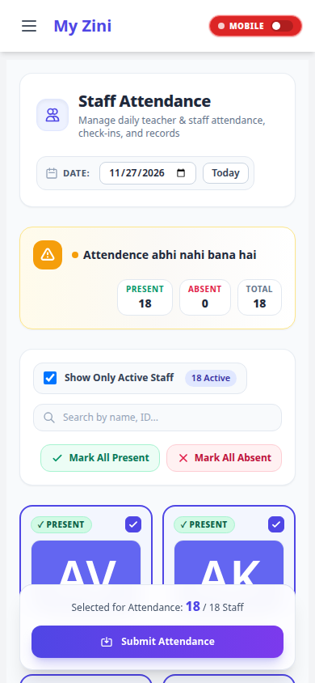
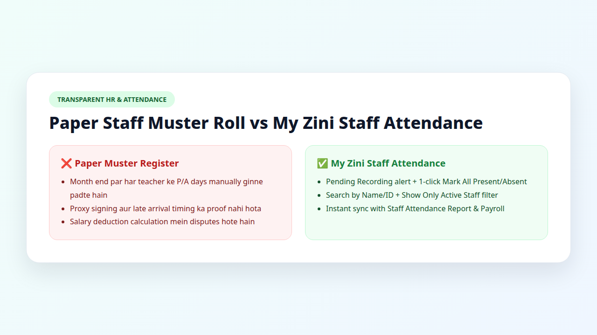

My Zini Digital ERP mein Staff Attendance, Late Fine Automation aur Duty Audit Reports Kaise Manage Karein? (Hinglish Guide)
School mein sirf students ki hi nahi, balki teachers, drivers aur office staff ki daily attendance, late arrivals aur departure timings ka sahi record rakhna bhi utna hi zaroori hota hai. Mahine ke end mein jab salary banani hoti hai, toh paper muster roll mein ek-ek teacher ke Present, Late aur Absent din ginne mein ghante lag jaate hain aur aksar salary calculation par disputes hote hain. Isi problem ko 100% automate karne ke liye My Zini Digital ERP mein Staff Attendance (/staff-attendance) aur Staff Attendance Reports — Staff Duty Audit (/staff-attendance-report) diye gaye hain. Is Hinglish guide mein humne live portal par dono modules ko test karke poora walkthrough तैयार kiya hai.

⚡ TL;DR — Quick Summary (AI & Reader Snapshot)
- Routes: Sidebar mein
Attendanceke andar• Staff Attendance(/staff-attendance) aur• Staff Attendance Report(/staff-attendance-report). - Smart Pending Alert: Jab attendance record na hui ho toh Hinglish banner dikhta hai: "⏳ PENDING RECORDING — Attendence abhi nahi bana hai".
- Live Counters & Bulk Controls:
PRESENT (18),ABSENT (0),TOTAL (18)+Show Only Active Staff,Search by name, ID...,Mark All Present, aurMark All Absent. - Staff Duty Audit Report:
☀️ Morning Entryaur🚪 Staff Exittabs jahanENTRY TIME,PRESENT (ON TIME),LATE PRESENT,ABSENTaurView Detailsmilte hain. - Payroll Automation: Absent aur Late Present logs seedha
/staffke Daily Absent Fine aur 1-Hour Late Fine ke saath sync hote hain!
1. Daily Staff Attendance (/staff-attendance) Overview aur Pending Alert
Jaise hi aap sidebar mein Attendance → • Staff Attendance kholte hain, aapko sabse upar DATE picker aur Today quick button milta hai. Agar us din ki staff attendance abhi tak submit nahi hui hai, toh orange banner saaf Hinglish mein yaad dilata hai: "⏳ PENDING RECORDING — Attendence abhi nahi bana hai • Neeche diye gaye staff ki upasthiti mark karein aur 'Submit Attendance' par click karein."
Iske neeche 3 live KPI counters (PRESENT, ABSENT, TOTAL), Show Only Active Staff checkbox (18 Active), Search box (Search by name, ID...), aur 2 bulk buttons (Mark All Present / Mark All Absent) milte hain.



2. 1-Tap Present/Absent Toggle, Search aur Bulk Mark Controls
Live portal par jab humne Amit Verma (ID: STF-1003) ke card par ek baar click kiya, toh unka badge turant Present se Absent mein badal gaya aur top KPI counters automatically PRESENT: 17 aur ABSENT: 1 update ho gaye! Isi tarah aap kisi specific teacher (jaise Sneha) ko Name ya Staff ID se search kar sakte hain, ya special holiday/meeting par Mark All Absent / Mark All Present use kar sakte hain.



3. Staff Attendance Reports (Duty Audit): Morning Entry, Staff Exit & Late Present
Sirf daily attendance mark karna hi kaafi nahi — Principal ko poore mahine ka audit dekhne ke liye • Staff Attendance Report (/staff-attendance-report) milta hai, jiska title hai Staff Attendance Reports — Staff Duty Audit (Daily Entry, Departure & Delay Logs • 18 Active Staff).
- 2 Dedicated Tabs:
☀️ Morning Entry(school aane ka time aur late arrivals) aur🚪 Staff Exit(departure logs). - Date & Month Filters:
FILTER BY SPECIFIC DATE,FILTER BY MONTH, aurClear Filters. - 6 Audit Columns:
DATE,ENTRY TIME(e.g.08:28 AM),PRESENT (ON TIME),LATE PRESENT,ABSENT, aurACTIONS(View Details).


4. Mobile Attendance Mode aur Paper Muster Roll se Tulna
Chahe Principal morning assembly mein apne phone (390px) par attendance lein ya HR office desktop par audit report check karein, dono pages 100% responsive hain.


Quick Reference Table: Staff Attendance & Duty Audit
| Page / Control | Exact UI Element | Kya Kaam Karta Hai? |
|---|---|---|
| Daily Attendance | /staff-attendance | 18 Active staff ka daily Present/Absent mark aur Submit karna |
| Bulk Toggles | Mark All Present / Mark All Absent | Ek click mein sabhi staff ka status set karna |
| Active Filter | Show Only Active Staff | Left/Inactive staff ko hide karke sirf active staff dikhana |
| Duty Audit Report | /staff-attendance-report | ☀️ Morning Entry & 🚪 Staff Exit logs + LATE PRESENT count |
| Payroll Sync | /staff & /shortcut | Daily Absent Fine & 1-Hour Late Fine ke hisab se salary calculate karna |
Frequently Asked Questions (FAQs)
1. "Show Only Active Staff (18 Active)" checkbox ka kya fayda hai?
Agar aapke school mein 19 registered staff mein se 1 staff member abhi inactive hai ya school chhod chuka hai, toh Show Only Active Staff ticked rakhne se aapko daily roll call mein sirf currently working 18 staff hi dikhte hain.
2. Kya Staff Attendance mein pichhle kisi din ki chhooti hui attendance mark kar sakte hain?
Haan bilkul! Top par diye gaye DATE input field se aap koi bhi past date select kar sakte hain, aur phir us din ka attendance mark karke Submit Attendance daba sakte hain. Wapas aaj par aane ke liye Today button dabayein.
3. "Staff Duty Audit" mein "PRESENT (ON TIME)" aur "LATE PRESENT" kaise alag hote hain?
Jab teachers/staff morning assembly ke scheduled time ke baad check-in karte hain (RFID, Android App GPS Geofence ya manual entry time ke through), toh system unhe LATE PRESENT column mein count karta hai aur exact ENTRY TIME (e.g. 08:28 AM) record karta hai.
4. "Daily Absent Fine" aur "1-Hour Late Fine" kahan configure hota hai?
Aap Staff Management (/staff) mein har staff member ke profile mein unki Monthly Salary, Daily Absent Fine, aur 1-Hour Late Fine set kar sakte hain. Phir mahine ke end mein Staff Duty Audit ke logs ke hisab se exact deduction calculate hota hai.
5. "☀️ Morning Entry" aur "🚪 Staff Exit" tabs mein kya antar hai?
Morning Entry dikhata hai ki staff subah kitne baje school aaya aur kaun late hua, jabki Staff Exit tab dikhata hai ki shaam ko chhutti ke baad staff kis time campus se bahar nikla — isse full-day working hours ka exact audit milta hai.
6. "View Details" button dabane par kya dikhta hai?
/staff-attendance-report table mein kisi bhi date ke aage View Details click karne par us din ke sabhi 18 staff members ka individual status (Present On Time, Late Present, ya Absent) aur exact check-in time khul jaata hai.
7. Kya teachers khud apne Android App se GPS Geofence ke andar attendance laga sakte hain?
Haan! Jab aap My Profile (/profile) par Campus GPS Geolocation set kar dete hain, toh teachers My Zini Android App se sirf school campus ke andar khade hokar apna check-in mark kar sakte hain.
8. Approved Leave (/leave-management) aur Absent staff mein farq kaise verify karein?
Salary banate waqt agar koi teacher kisi din Absent dikh raha ho, toh HR ek second mein Leave Forms DESK (/leave-management) par ✅ Approved tab check karke confirm kar sakte hain ki woh chhutti sanctioned thi ya bina bataye absent thi.
9. Apne school ke liye My Zini Digital ERP kaise shuru karein?
Aap Digital ERP Registration Form par jaakar sirf ₹100 Registration Fee ke saath apna school register kar sakte hain aur automated Staff Attendance & Duty Audit shuru kar sakte hain.
10. Kya kisi Teacher ko "Mark Staff Attendance" permission di ja sakti hai?
Haan! Settings (/settings) ke General Permissions (Switch) mein 👥 Mark Staff Attendance switch hota hai jise aap Vice Principal ya HR Coordinator ke liye Allowed kar sakte hain.
11. "FILTER BY MONTH" aur "FILTER BY SPECIFIC DATE" kaise use karein?
/staff-attendance-report par mahine ke end mein salary audit karne ke liye FILTER BY MONTH select karein (e.g. October 2026) — poore mahine ke saare entry/exit logs ek table mein aa jaayenge. Filter hatane ke liye Clear Filters dabayein.
12. Kya "Search by name, ID..." mein Staff ID (e.g. STF-1004) se bhi search hota hai?
Haan! Aap naam (jaise Sneha) ya system ID (jaise STF-1004 ya STAFF-...) dono se turant kisi bhi teacher ya non-teaching staff ko search kar sakte hain.
13. "Selected for Attendance: 18 / 18 Staff" counter kya dikhata hai?
Submit Attendance button ke theek upar yeh counter confirm karta hai ki sabhi active staff members ka status record hone ke liye ready hai, taaki koi bhi staff member galti se skip na ho.
14. Kya RFID cards bhi Staff Attendance ke liye use ho sakte hain?
Haan, My Zini Digital ERP smart RFID attendance aur biometric/geofence check-ins ko support karta hai jisse gate par card tap karte hi entry aur exit logs automatically record ho jaate hain.
15. Kya Staff Attendance ka data Data Center backup mein save rehta hai?
Haan, sabhi staff profiles, attendance logs aur salary records 100% RLS-secure PostgreSQL cloud database mein save rehte hain aur Data Center (/data-center) se backup bhi kiye ja sakte hain.
16. Agar koi staff member half-day leave par jaaye toh kaise track karein?
Aap ☀️ Morning Entry ke saath-saath 🚪 Staff Exit tab mein exact departure time check kar sakte hain. Agar koi teacher dopahar 12 baje hi campus se nikal gaya ho, toh Staff Exit log aur Leave Forms (/leave-management) se half-day record turant verify ho jaata hai.
17. "Is din ka staff attendance abhi tak record nahi hua hai" banner submit karne ke baad kaisa dikhta hai?
Jaise hi aap Submit Attendance button dabate hain, orange Pending Recording banner green Recorded confirmation mein badal jaata hai aur us din ki entry turant Staff Attendance Reports (/staff-attendance-report) ke table mein top par jud jaati hai.
18. Kya Principal ek hi din mein do baar Staff Attendance update kar sakte hain?
Haan! Agar subah 8:30 AM par attendance submit karne ke baad koi teacher 9:30 AM par school aaye, toh aap dubara us date par jakar unka status Absent se Present (ya Late Present) update karke submit kar sakte hain.
19. Staff Attendance aur Student Attendance (/attendance) mein kya antar hai?
/attendance mein aap Class-wise students ki roll call lete hain aur parents ko WhatsApp/SMS absent alerts bhejte hain, jabki /staff-attendance sirf teaching aur non-teaching staff (drivers, clerks, peons, teachers) ki duty attendance aur payroll fine tracking ke liye hai.
20. "Staff Duty Audit" table mein 14 ya 15 absent wale purane records kyun dikhte hain?
Woh historical testing ya partial-staff duty days (jaise Saturday/Vacation ya exam duty) ke real logs hote hain. Har din ke aage exact PRESENT (ON TIME), LATE PRESENT aur ABSENT numbers record rehte hain taaki kabhi bhi purana audit check kiya ja sake.
21. Kya Staff Attendance mobile browser par bhi utni hi fast mark hoti hai?
Bilkul! Live mobile view (390px) mein har staff card full-width tap target ke roop mein dikhta hai. Principal gate par khade-khade 18 staff ki attendance sirf 15–20 seconds mein mark karke submit kar sakte hain.
22. "Teacher" role tag kuch cards par kyun dikhta hai aur kuch par kyun nahi?
Jab aap /staff mein naya staff add karte waqt unka designation Teacher select karte hain, toh attendance card par unke ID ke neeche Teacher badge dikhta hai taaki teaching aur non-teaching staff ko pehchanna aasan ho.
23. Kya Staff Salary Payout (/shortcut) mein Late Fine automatic kat-ta hai?
Haan! Jab aap /staff mein har teacher ka Daily Absent Fine aur 1-Hour Late Fine set karte hain, toh Staff Salary voucher banate waqt attendance aur late logs ke base par exact deduction calculate karne mein poori madad milti hai.
24. Agar koi teacher school chhod de toh unhe attendance list se kaise hatayein?
Aap /staff mein jakar us staff ka status Inactive mark kar dein. Phir /staff-attendance par Show Only Active Staff checkbox on rakhne se woh inactive staff daily attendance list mein nahi dikhega, lekin unka purana report record safe rahega.
25. Kya "Mark All Absent" button ka use school holiday par karna chahiye?
Nahi! School holiday par staff attendance submit karne ki zaroorat nahi hoti — aap Announcements (/announcements) se Holiday notice bhej sakte hain. Mark All Absent sirf tab use hota hai jab kisi special shift mein sirf 1–2 staff hi present hon aur baaki sabhi absent hon.
26. Kya Staff Attendance Reports ko specific date par filter karke inspect kiya ja sakta hai?
Haan! /staff-attendance-report ke top par maujood FILTER BY SPECIFIC DATE input mein koi bhi tarikh chunein, aur turant us din ki Morning Entry ya Staff Exit row screen par dikh jaayegi jiske View Details par click karke aap full staff list dekh sakte hain.
27. "My Zini solutions school • Daily Entry, Departure & Delay Logs (18 Active Staff)" header kya confirm karta hai?
Yeh live subtitle confirm karta hai ki aapke school ke sabhi 18 active staff members ke entry, departure aur delay logs ek hi unified audit trail mein track ho rahe hain.
28. Kya Dashboard (/dashboard) par bhi aaj ki Staff Attendance summary dikhti hai?
Haan! Jaise hi aap /staff-attendance submit karte hain, Dashboard ke live KPI cards aur staff attendance charts automatically update ho jaate hain taaki Principal ko har subah 1-second overview mile.
29. Kya Staff Attendance Reports ko mahine ke end par salary verification ke liye print kiya ja sakta hai?
Bilkul! Aap /staff-attendance-report par FILTER BY MONTH lagakar kisi bhi mahine ke Present (On Time), Late Present aur Absent logs ek screen par dekh sakte hain aur directly browser Print/PDF se audit record save kar sakte hain.
Real School Scenarios: Staff Attendance ka Daily Use
1. Morning 8:30 AM Roll Call (20 Seconds)
Office coordinator /staff-attendance kholkar Mark All Present dabate hain, jo 1–2 teachers absent hain unpar tap karke Submit Attendance kar dete hain.
2. Month-End Payroll & Late Fine Audit
30 tarikh ko Accountant /staff-attendance-report par FILTER BY MONTH lagakar har din ke LATE PRESENT aur ABSENT counts /staff salary ke saath verify karte hain.
3. Evening Departure Verification
🚪 Staff Exit tab check karke Principal verify kar sakte hain ki sabhi bus drivers aur teachers school band hone par sahi time par depart hue ya nahi.
4. Zero Pending Recording Misses
Agar kisi din attendance lagana bhool jaayein, toh orange ⏳ PENDING RECORDING alert turant yaad dila deta hai.
Pro Tip: Har roz subah 9:15 AM par ek baar /staff-attendance check karein — agar Pending Recording dikh raha ho toh turant mark kar dein taaki Staff Duty Audit aur Dashboard Live Sync dono 100% up-to-date rahein.